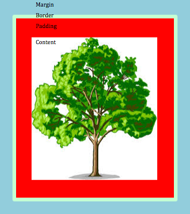

Week 2 - Technical Blog
The Differences Between Margin, Border, and Padding
Within HTML (Hypertext Markup Language), content is separated into a series of different elements in order to help the web developer/designer manipulate the content into a viewable webpage. For instance, HTML provides element tags with titles such as, “header,” “body,” and “footer.” In order to avoid confusion, it would be preferable for both the developer and consumer that the header is above the body, while the body is above the footer. HTML allows for this. But what if you wanted additional space between the body and header, or if there were three sections in the body that you wanted the reader to determine that they are clearly separate from each other? In order to do this, each element makes use of three variables, margin, border, and padding, to achieve the desired placement of the content relative to other content on a webpage.
The border is the (visible or invisible) area that surrounds your content. Padding is the space between your content and border, while the margin is the transparent space between your border and other content or borders on your webpage. Below is an example of how these three variables are used to move content around.
As you can see above, content is represented as an image of a tree. The border is the light green line that surrounds the content, while the padding is the red space that separates the content from the border. The light blue represents the margin, which is the amount of space between the content of one element relative to the content of all the other elements on the page.